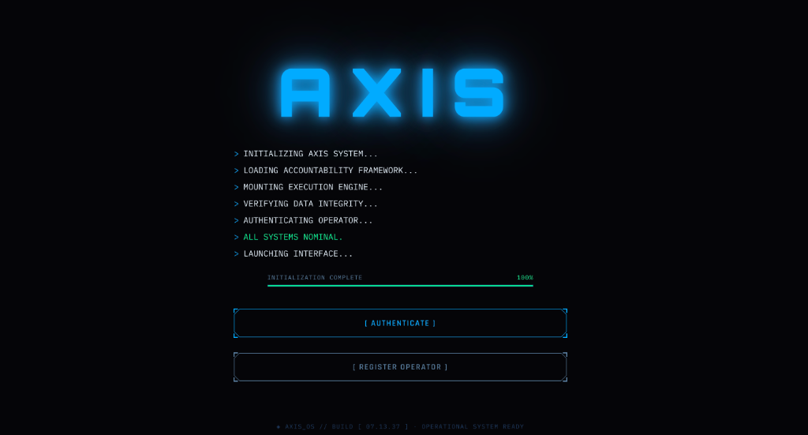
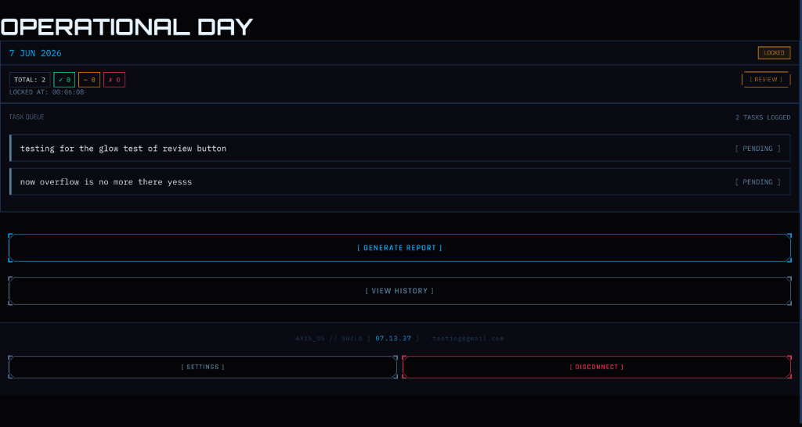
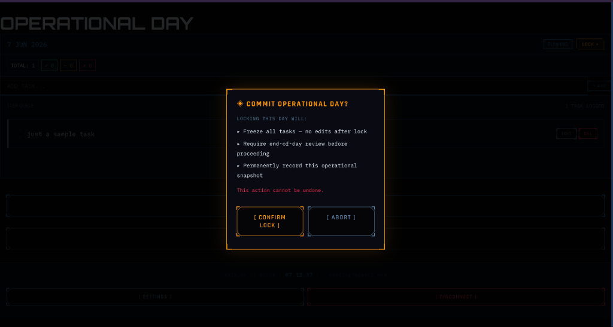
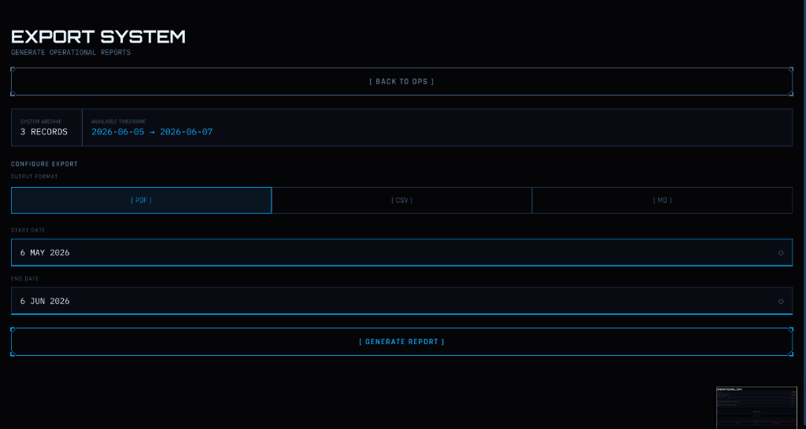
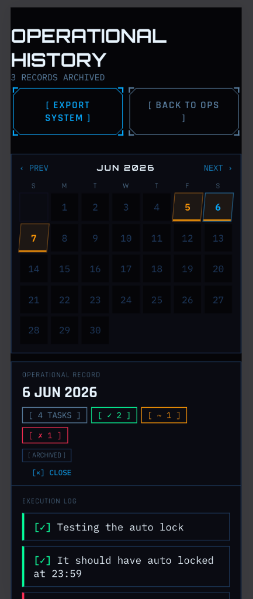
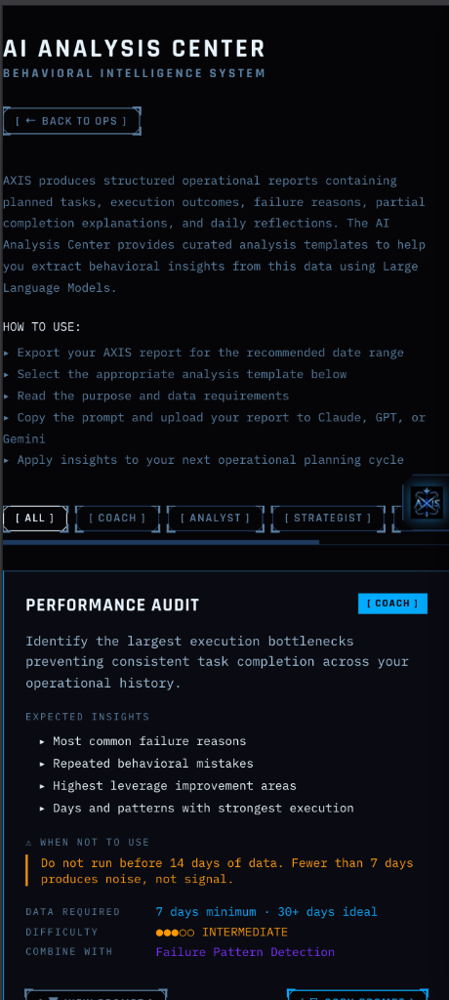
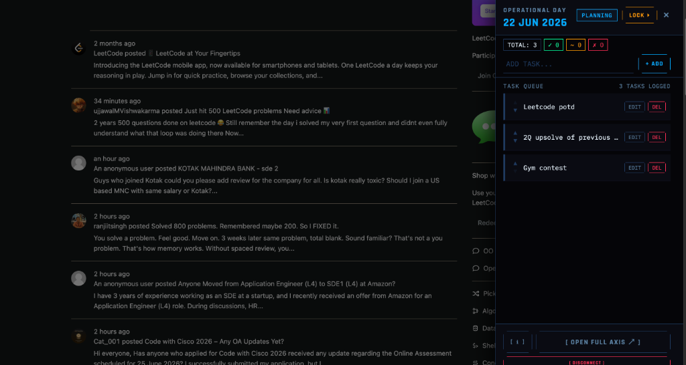
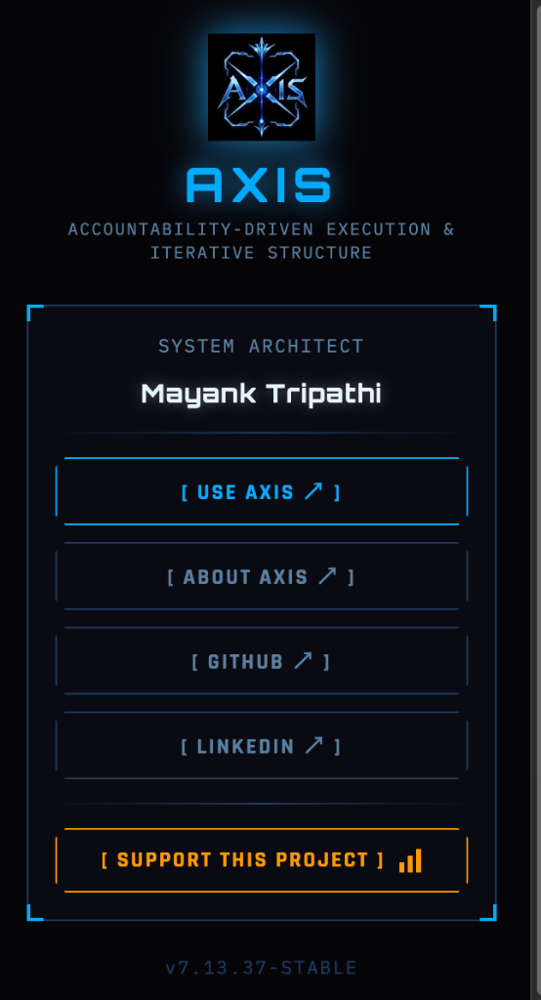

Why AXIS Exists
Behavioral Failure Diagnostic
Most productivity tools compile logs of tasks you complete. They ignore the tasks you don't. AXIS diagnoses behavior by forcing you to face execution friction. Click any diagnostic prompt to examine systemic causes.
The Diagnosis: Tasks get postponed because standard managers make planning cheap. You are allowed to reschedule tasks with a single swipe, removing any immediate cost of failure.
The AXIS Resolution: Once you commit to a day in AXIS, the system locks. A task cannot be rescheduled; it must either be completed, logged as a partial success, or declared a failure. Postponement is replaced by a formal verdict.
The Diagnosis: Motivation is a transient emotional state. When plans rely on motivation rather than committed structure, execution collapses as soon as cognitive fatigue sets in.
The AXIS Resolution: Directives replace motivation. By creating explicit boundaries, the system structures decisions ahead of time. You execution behavior is documented, shifting dependency away from feelings toward structured commitments.
The Diagnosis: A streak of high-energy days often creates overconfidence. You plan an excessive volume of work for the following days, leading to burnout, failure to execute, and complete momentum loss.
The AXIS Resolution: Strict daily reviews show you your historical completion capacity. By analyzing your average output logs, the system helps you commit to sustainable workloads, smoothing the peaks and valleys.
The Diagnosis: When tasks fail in traditional checklists, they either roll over silently or disappear. Because the friction of failure is hidden, there is no structural prompt to analyze the root cause.
The AXIS Resolution: In AXIS, a failed task is a data event. The system forces you to input an explicit reason for the failure. By documenting these diagnoses, you create a behavioral audit trail that exposes recurring triggers.
The Diagnosis: Todo apps are infinite scroll canvases. Adding items feels like progress, but it is just planning theater. An unconstrained list decouples daily action from realistic capacity.
The AXIS Resolution: Constraints breed execution. AXIS enforces limits. A locked day forces a strict subset of tasks, and progression is blocked entirely until the current operational ledger is finalized.
System Directives
Plan → Commit
Create your tasks, then lock the operational day. Once locked, the day is sealed. No adding, editing, or deleting tasks. The plan transitions from a flexible list to an immutable commitment.
Closure Before Progression
The SYSTEM LOCK ACTIVE protocol prevents you from beginning a new planning day until the current day is reviewed. You must face the operational reality of yesterday before planning today.
Every Task Needs a Verdict
Nothing stays in limbo. Every task must be closed out with a strict verdict: Done, Partially Done, or Failed. No item is allowed to slip away, be ignored, or disappear.
Failure Must Be Explained
Failed tasks trigger a mandatory diagnosis. You must document the cause of failure. This mechanism transforms errors into structured data, converting failures into behavioral insight.
Reflection Creates Awareness
While task logs list what happened, reflections record why it happened. Documenting your mental state at the end of the day compiles behavioral awareness over time.
Immutable Memory
Reviewed operational days are written to permanent archives. They cannot be modified, deleted, or retrospectively cleaned. Honesty is enforced through system-level immutability.
AI-Ready Behavioral Reports
Generate reports across custom timeframes. Export formats include PDF for human review and CSV/Markdown structures tailored specifically for AI analysis. Feed your operational history directly to LLMs to query behavioral blocks, productive habits, and failure correlations.
System Interface

System Boot Gateway
The operational entry portal. Establishes system integrity, authenticates the operator key, and compiles initial accountability parameters before launching the system interface.
Operational Command
The daily execution interface. Displays tasks logged for the active day, provides status tickers (Done, Partially Done, Failed), and locks command options inside solid bracketed boxes.


System Immutability Lock
The commitment verification popup. Warns that committing operational logs permanently freezes daily tasks. Disables addition, deletion, and editing systems, cementing commitments.
Archive Export System
The reporting engine. Configures dates and compile operational logs into standard PDF files or AI-oriented structural Markdown and CSV data sets for analysis.


Mobile Tactical Grid
Handheld history interface. Displays historical day results in a compact calendar grid with color-coded tags and allows review of permanent daily execution logs.
Theme Origins
Solo Leveling System Concept
AXIS is heavily inspired by the absolute, game-like interface from the anime Solo Leveling. In the lore, the "System" is a mysterious, uncompromising entity that forces the hunter Sung Jin-woo to complete daily physical training quests. There are no excuses, no extensions, and no snoozing. Failure to execute triggers immediate deportation to a lethal penalty zone. The System is absolute, objective, and forces constant progression through execution.
Uncompromising Vocabulary
Traditional planning tools encourage procrastination by hiding failure behind beautiful animations and infinite log postponements. AXIS rejects planning theater. By adopting a clinical, military, and terminal-grade vocabulary—including Directives (not tasks), Diagnostics (not checklists), and Execution Ledgers (not histories)—we shift the user's mindset from passive dreaming to active operational execution.
Reality Glitch Interface
First off, these glitches look incredibly cool. Beyond aesthetics, they align with Solo Leveling's system glitches that occur when summoning objects from another realm—giving immediate recognition to the anime's SYSTEM concept. They also signify operational data actively materializing from the server and database to your screen, representing the visual friction of plans meeting chaotic reality.
AI Analysis Center
AXIS produces structured operational data. The AI Analysis Center helps you ask better questions about it.
AXIS exports your operational history as structured PDF, CSV, or Markdown reports. The AI Analysis Center provides a curated library of analysis templates — each one a precise investigative prompt designed to extract specific behavioral insights from your data using Large Language Models.
The AI Analysis Center does not automate analysis inside AXIS. It does not generate conclusions on your behalf. It gives you the exact questions to ask — and the data to answer them with. You remain the analyst. The AI is your instrument.

Investigative Template Dossiers
AXIS Companion

The operational dashboard for your browser. AXIS — wherever you work.
AXIS Companion is a Chrome browser extension that lives on the right edge of every page as the AXIS logo. One click slides out your operational dashboard — your task queue, day status, and lock control — without leaving the page you are on.
AXIS Companion is not a productivity extension. It is an operational dashboard connected to the AXIS ecosystem. The extension provides awareness. AXIS provides accountability. AI Analysis provides intelligence.

AXIS is not a todo app.
'How do I actually behave when my plans meet reality?'"